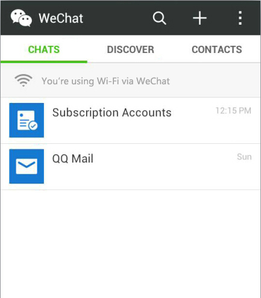
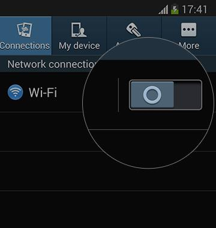

- Q：What is Wi-Fi via WeChat ？
- A：Wi-Fi via WeChat is a convenient way to connect to the Internet via WeChat and access Wi-Fi services provided by vendors and third-party network service providers.
- Q：Is Wi-Fi via WeChat secure？
-
A：WeChat provides a convenient networking mode; however, be cautious when using public Wi-Fi. When you successfully connect to the Internet via Wi-Fi via WeChat , the connection status is displayed on the top of the WeChat session list. Otherwise, you may have connected to a pseudo wireless access point.

Please don't:
- 1) Open unknown links;
- 2) Download unknown applications;
- 3) Enter your password for WeChat or QQ accounts on untrusted websites;
- 4) Disclose your bank account information.
- Q：How do I quit Wi-Fi via WeChat ？
-
A：Switch to other networks on "Settings"-"Wi-Fi" on your device or disable the Wi-Fi function.

- Q: What do I do if I cannot use Wi-Fi via WeChat to connect?
- A：This may be caused by a network problem. We suggest that you connect to the Internet again. If the problem persists, please consult on-site staff or call your ISP's customer service hotline.